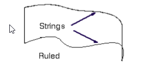

week6-9 <<
Previous Next >> week15-18
week10-14
week12
教材
第七章 自由曲面建模
在本章中，您將學習如何在NX 12中創建自由曲面。
至此，您已經學習了使用“表單特徵”或“草圖繪製”創建模型的不同方法。
自由曲面建模涉及出於美學或功能目的，以曲面形式創建模型，例如車身和渦輪葉片。
一些自由格式的功能如下所示
要創建自由曲面的特徵，首先需要一組點，曲線，圖紙或實體的邊緣，圖紙或實體的面或其他對象。
以下各節介紹了可用於使用自由格式功能創建模型的一些方法
7.1概論
在NX 12中，“Menu → Insert →Surface/Mesh Surface/Sweep/Flange Surface和 Menu → Edit → Surface可進行更高級的操作。
您可以通過多種方式從現有特徵（如點，邊，曲線等）中創建自由形式特徵。以下部分討論了一些常用功能
7.1.1 從點創建自由曲面
如果您正在構造或預先存在的數據的幾何僅包含點，則可以嘗試使用以下三個選項之一從給定點構建曲面
➢ From Menu, click on Insert → Surface
Four Point Surface:以四個點形成曲面
Through Points:點的形式是矩形陣列形成的曲面
From Poles:點的型式是矩形陣列並與穿過他們的線相切
7.1.2 從線創建自由曲面
如果構造幾何包含連接對象（曲線和邊），則可以使用以下兩個選項之一來創建自由曲面
➢ From Menu, click on Insert → Mesh Surface
Ruled:以兩條大致平行的線建構的曲面

Through Curves:以兩條以上大致平行的線建構的曲面
如果構造幾何包含兩個或更多個彼此大致平行的（曲線，面，邊），
以及一個或多個大致垂直於第一組曲線（參考線）的截面，則可以嘗試使用其中一個以下這些選項可構建自由曲面
Through Curve Mesh:如果在每個方向（平行和垂直）上至少存在四個截面線且至少兩個線，則使用
Swept:如果至少兩個截面線大致垂直，則使用 (from Menu, choose Insert →Sweep)
7.1.3 從面創建自由曲面
Offset Surface:幾何表面有需要填補的曲面
Extension:幾何表面有曲面和邊線或邊緣曲線或曲線
week6-9 <<
Previous Next >> week15-18